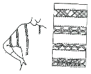
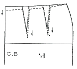
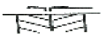

양장기능사 (2005-10-02 기출문제)
1과목: 임의 구분
1. 일반적으로 기성복 제작과정이 옳은 것은?
- 그레이딩-공업용옷본제작-마킹-연탄-재단-봉제
- 공업용 옷본제작-그레이딩-마킹-연단-재단-봉제
- 그레이딩-마킹-연단-공업용옷본제작-재단-봉제
- 공업용 옷본제작-연단-재단-그레이딩-마킹-봉제
(정답률: 65%)

2. 다음은 원형의 활용에 관한 것이다. 길 원형의 다트 활용방법으로 틀린 것은?
- 다트는 평면의 재료를 인체에 맞춰 입체화시키는 기능적인 역할을 하며 장식적인 효과도 겸할수 있다
- 한 개의 다트를 보다 작은 여러개의 다트로 나눌 수도 있다.
- 다트를 터크, 개더, 절개선 등으로 변형 시킬수 있다
- 다트는 B.P에 고정되어야 한다
(정답률: 80%)
3. 110cm 폭의 천으로 슬랙스를 만들려고 한다. 옷감량의 계산법은?
- [슬랙스길이+시접(8cm-10cm)]×2
- 슬랙스길이+시접(8cm-10cm)
- (슬랙스길이×3)시접(8cm-10cm)
- (슬릭스길이+2)시접(8cm-10cm)
(정답률: 39%)
4. 무릎선의 약자는?
- K.L
- N.L
- M.H.L
- S.K.L
(정답률: 88%)
5. 비대칭 균형으로 디자인 한 의복은 어떤 느낌을 주는가?
- 평범하고 보수적이다
- 안정감을 준다
- 단조로운 감을 준다.
- 활기차고 세련감이 있다
(정답률: 86%)
6. 실루엣이 인어의 하반신과 비슷한 스커트의 명칭은?
- 티어드 스커트
- 고어드 스커트
- 플레어 스커트
- 머메이드 스커트
(정답률: 85%)
7. 옷감고 다리미 온도에서 가장 부적당한 것은?
- 나일론. 비닐론 120-150°C
- 견직 130-150°C
- 폴리에스테르.레이온 120-150°C
- 마직 100-120°C
(정답률: 53%)
8. 다음 바느질 법 중 가장 튼튼한 바느질법은?
- 홑솔
- 통솔
- 바이어스
- 엇뜨기
(정답률: 81%)
9. 다음 그림은 장식봉을 나타낸 그림이다. 그림 명칭을 고르시오.

- 프린징
- 패거팅
- 스모킹
- 턱킹
(정답률: 53%)
10. 다음의 바느질 설명중에서 감치기 방법은?
- 스커트, 슬랙스, 소매 등의 밑단부분에 많이 쓰이는 바느질이고 단을 접어서 다린 후에 겉감으로는 바늘땀이 거의 나타나지 않게 하여야 하고 접힌 단쪽으로 길게 떠 준다
- 밑단 부분이나 안감을 겉감에 고정시킬 때, 지퍼부분에서 안감을 겉감부분에 고정시킬 때 많이 사용하고 옷의 안쪽부분에 사선의 감치기 한 실이 나타나고 겉쪽으로는 실땀이 보이지 않도록 한다.
- 두꺼운 옷감의 단 부분이나 뒤 트임 부분에 많이 사용되는 바느질이고, 쉽게 뜯어지는 것을 방지하는 튼튼한 바느질법이며 장식적인 효과도 있다.
- 올이 풀리지 않도록 시접의 끝을 꺽어 다린 후 단 분량을 접어 재봉틀로 박아주며 면이나 청바지의 단처리에 주로 사용된다.
(정답률: 62%)
11. 스탠드분이 없이 소재의 두께와 유연성, 네크라인의 파임정도를 다양하게 디자인할 수 있는 칼라 부류에 속하니 않는 것은?
- 이탈리안 칼라
- 피터팬 칼라
- 케이프 칼라
- 세일러 칼라
(정답률: 39%)
12. 다음 중 seam의 분류 기호가 아닌 것은?
- 수퍼포즈 시임
- 랩 시임
- 2중 환봉 시임
- 바운드 시임
(정답률: 78%)
13. 일반적으로 고속미싱을 나타낸 것은?
- 800-1800RPM
- 2500-3500RPM
- 4000-4500RPM
- 5000RPM
(정답률: 70%)
14. 다음의 그림과 같이 보정해 주어야 하는 체형은?

- 엉덩이가 나온 체형
- 엉덩이가 처진 체형
- 가슴이 들어간 체형
- 어덩이가 나오고 복부가 들어간 체형
(정답률: 100%)
15. 재봉틀 바느질할 때 얇은 천9면직물의 오건디나 견직물의 조젯)의 옷을 만들기에 가장 적당한 바늘의 크기는?
- 6호
- 9호
- 14호
- 16호
(정답률: 90%)
16. 바지 밑위길이를 잴때 의자에 앉은 다음 옆 허리선부터 어디까지 재는가?
- 엉덩이 밑 선
- 엉덩이 둘레선
- 허리 밑선
- 의자 바닥
(정답률: 95%)
17. 의복의 변형을 막고 일정한 모양 실루엣을 형성 유지시키는 목적으로 겉감의 보조적 역할을 하는 심지에 대한 설명 중 잘못된 것은?
- 빳빳하면서도 탄력성이 크며 형태안정성이 큰 것이 좋다.
- 부착이 간편한 것이 좋다.
- 두께, 강동, 색채, 관리방법이 겉감과 조화가 되는 것이 좋다.
- 모심은 드레이프성이 없으나 탄력성이 풍부하고 형태 모존성이 뛰어나다
(정답률: 50%)
18. 의복의 기능상 기본원형에 속하지 않는 것은?
- 슬랙스
- 스커트
- 소매
- 길
(정답률: 79%)
19. 소매의 구성상에 있어서 다른 것은?
- 래글런 소매
- 퍼프 소매
- 타이트 소매
- 비숍 소매
(정답률: 90%)
20. 다음중에서 시접분이 가장 적게 들어갈 곳은?
- 목돌레선
- 어깨선
- 옆선
- 단부분
(정답률: 90%)
2과목: 임의 구분
21. 옷본의 배치시에 올바른 방법은?
- 털이 긴 옷감은 털의 결방향이 옆으로 향하도록 한다.
- 패턴은 작은 것부터 배치한다.
- 옷감의 겉쪽에 옷본을 배치한다.
- 짧은 털이 있는 옷감(코듀로이)은 털의 결방향이 위로 향하도록 한다.
(정답률: 96%)
22. 옷의 단 부분에 올을 풀고 매듭을 지어 술 장식을 하는 것으로 디테일의 효과를 나타내는 것은?
- 아플리케
- 컷 워크
- 퀄팅
- 프린징
(정답률: 84%)
23. 오건디, 시폰등과 같이 얇고 비치며 풀리기 쉬운 옷감에 주로 이용되는 솔기는?
- 통솔
- 쌈솔
- 평솔
- 홑솔
(정답률: 87%)
24. 다음 원가 계산 방법으로 틀린 것은?
- 제조 원가 = 직접 원가 + 제조 간접비
- 총원가 = 제조 원가+ 판매 간접비 + 일반 관리비
- 판매가 = 총원가 +관리비
- 이익 = 판매가 - 총원가
(정답률: 50%)
25. 장촌식 제도법이란?
- 초보자에게 적당하지 않다.
- 대량생산되는 의복에 적합하다.
- 인체의 각부위를 세밀하게 계측한다.
- 개인의 체형특성에 맞는 원형이다.
(정답률: 86%)
26. 다음 중 오그림의 제도 부호로 올바른 것은?

(정답률: 86%)
27. 다음은 시착에 관한 것이다. 시침 바느질이 끝나면 겉옷에 맞추어 속옷을 정리하여 바르게 착용한 후 핀을 꽂고 관찰한다. 관찰방법으로 틀린 것은?
- 전체적인 실루엣이 알맞은 가를 관찰한다.
- 가슴둘레의 여유분이 적당한가를 관찰한다.
- 팔은 옆 솔기에 붙여 아래로 향하게 하고 움직이지 아니하고 관찰한다.
- 옷감의 올이 바로 놓였는가를 관찰한다.
(정답률: 73%)
28. 고정식 재단기로서 재단대의 중앙에 좁고 끝이 없는 칼이 위에서 아래로 고속회전을 하여, 일명 입체재단기라고도 할 수 있는 지단기는?
- 밴드나이프 재단기
- 원형칼 재단기
- 수직칼 재단기
- 프레스 재단기
(정답률: 50%)
29. 인체의 치수를 계측하는 항복에 관한 설명이다. 유두점을 지나 수평으로 둘레를 계측하는 항복은?
- 웟가슴둘레 치수
- 밑가슴둘레 치수
- 가슴둘레 치수
- 유장 치스
(정답률: 90%)
30. 마르틴식 인체측정에서 높이 측정기구로 가장 적합한 것은?
- 활동계
- 촉각계
- 간상계
- 신장계
(정답률: 85%)
31. 피복용 섬유로 사용될 수 있는 최소한의 강도는?
- 0.⑤〔g/d〕
- 0.5〔g/d〕
- 2.5〔g/d〕
- 9.0〔g/d〕
(정답률: 67%)
32. 평직에 대한 설명 중 옳은 것은?
- 직물에 사선이 나타나고 부드럽다.
- 비교적 바닥이 얇으나 튼튼하고 마찰에 강하다
- 매끄럽고 촉감이 좋으며 광택이 있어 보기에 아름답다.
- 경사와 위사의 굴곡도가 적고 직축률이 크다.
(정답률: 67%)
33. 면섬유의 중공에 관한 설명 중 가장 적절한 것은?
- 섬유의 탄성을 감소시키며 급격한 파괴에 대하여 견디게 한다.
- 보온성을 유지하며 전기절연성을 부여한다.
- 미성숙한 섬유는 중공이 매우 발달되어 있다.
- 표면의 윤활성을 부여하여 방적에서 엉킴성을 감소한다.
(정답률: 78%)
34. 피복을 보관할 때 방법이 틀린 것은?
- 피복보관 용기는 가능한 밀폐된 것을 사용할 것
- 방충제는 때때로 보충할 것
- 방충제는 천이나 신문지로 싸서 넣을 것
- 방충효과를 좋게 하려면 두가지 약재를 한 용기에 혼합하여 놓을 것
(정답률: 67%)
35. 면섬유의 등급 사정 사항이 아닌 것은?
- 색
- 강도와 신도
- 외래잡물
- 조면성적
(정답률: 45%)
36. 면직물에 있어서 산화 섬유소가 생성되어서 섬유가 약해지는 경우는?
- 아셑산으로 처리할 때 온도가 낮은 경우이다
- 수산화나트륨 용액으로 삶을 때 직물이 노출되어 공기와 접촉하는 경우이다.
- 하이드로설파이드를 사용하여 표백할 때 직물이 노출되어 공기와 접촉하는 경우이다.
- 냉액에서 알칼리 용액으로 처리할 때 농도가 진한 경우이다.
(정답률: 66%)
37. 다음 중 면 섬유의 형태에 관한 설명으로 알맞은 것은?
- 측면에는 천연꼬임이 있다
- 형태는 둥근 유리 모양이다.
- 횡단면은 원형이다.
- 마디가 있다.
(정답률: 58%)
38. 다음중에서 내일광성이 가장 불량한 것은?
- 트리아세테이트 섬유
- 폴리비닐알코올계 섬유
- 폴리아미드계 섬유
- 폴리아크릴로니트릴계 섬유
(정답률: 43%)
39. 나일론의 성질을 설명한 것 중 옳지 않는 것은?
- 나일론의 특출한 성질의 하나는 큰 항장력을 가졌다는 것이다.
- 나일론은 아주 좋은 내마찰성과 내골곡성을 가지고 있다.
- 나일론은 다른 섬유에 비하면 아주 가벼워 경량 피복재료로서 중요한 가치를 가진다.
- 나일론은 직접염료에 염색성이 좋아 다른 직물의 염료를 쉽게 흡착하므로 타직물과 함께 세탁하면 안된다.
(정답률: 89%)
40. 다음 중 알칼리에 가장 약한 섬유는?
- 면
- 양모
- 아마
- 레이온
(정답률: 50%)
3과목: 임의 구분
41. 중년층에 맞는 의복색은?
- 빨강, 주황, 다홍
- 녹색, 연두, 보라
- 노랑, 파랑, 빨강
- 빨강, 보라, 노랑
(정답률: 66%)
42. 르네상스 시대 복장의 특징으로 옳은 것은?
- 과장되고 화려한 실루엣
- 활동적인 디자인
- 관능적인 노출형의 디자인
- 비단을 사용하기 시작
(정답률: 80%)
43. 다음의 색상 중 가장 따뜩한 느낌을 주는 옷감의 색상은?
- 주황
- 흰색
- 연두
- 파랑
(정답률: 92%)
44. 색광혹합에서 노량을 만들려면 어떻게 하여야 하는가?
- 빨강 + 자주
- 파랑 + 녹색
- 빨강 + 녹색
- 빨강 + 녹색 + 파랑
(정답률: 77%)
45. 스포티한 옷차림과 개성적인 형에 적합한 배색은?
- 부드러운 색조
- 밝은 색조
- 탁한 색조
- 강한 색조
(정답률: 60%)
46. 텔레비전 화면을 보고 있으며 화면에 투사한 인물이 사라진 뒤에서 그 검은 상이 보이는 것은?
- 면적 효과
- 동시 대비
- 잔상 현상
- 동화 현상
(정답률: 97%)
47. 다음 중 키가 커보이는 효과를 나타낸 것은?
- 여려개의 세로선을 놓는다.
- 명도가 낮은 곳을 입는다.
- 저채도의 색상을 선택한다.
- 한 개의 세로선의 길이를 길게 한다.
(정답률: 58%)
48. 다음 중 색의 3속성이 아닌 것은?
- 대비
- 채도
- 색상
- 명도
(정답률: 88%)
49. 평화, 영원, 안식의 느낌을 주는 색은?
- 파랑, 보라
- 녹색, 청록
- 자주, 보라
- 회색, 흰색
(정답률: 67%)
50. 색의 진출 및 후퇴에 대한 설명 중 틀린 것은?
- 난색계는 한색계보다 진출성이 놓다
- 배경색과의 채도차가 놓은 색은 진출한다
- 배경색과의 명도차가 큰 밝은 색은 진출한다
- 배경색이 한색계일때 난색께를 대비시키면 한색계가 진출한다.
(정답률: 70%)
51. 무명섬유의 정련에 가장 많이 사용되는 정련제는 ?
- 규산나트륨
- 과산화수소
- 수산화나트륨
- 아염소산나트륨
(정답률: 59%)
52. 폴리에스테르 직물에 수산화나트륨 용액을 처리하여 유연성과 드레이프성, 촉감 등을 향상 시키는 가공은?
- 감량가공
- D.P 가공
- 방염가공
- 방축가공
(정답률: 58%)
53. 다음중에서 편성물에 해당되는 것은?
- 메리야스
- 평직
- 펠트
- 조물
(정답률: 50%)
54. 한가닥 또는 여러가닥의 실을 고리 모양의 편환을 만들어 이것을 상하, 좌우로 얽어서 만든 것은?
- 직물
- 편성물
- 부직포
- 조물
(정답률: 75%)
55. 머서화가공으로 얻어지는 효과가 아닌 것은?
- 흡습성의 증가
- 염색성의 증가
- 광택의 증가
- 내연성의 증가
(정답률: 54%)
56. 다음에서 염색견뢰도에 영향을 미치는 요인이 아닌 것은?
- 섬유의 단면형
- 섬유의 결정성
- 염료의 화학적 성질
- 섬유의 비결정성
(정답률: 46%)
57. 의류직물용인 아마의 성능이 맞게 짝지어진 것은?
- 탄성회복 - 높음
- 내마모성 - 나쁨
- 신도 - 낮음
- 광택 - 낮음
(정답률: 50%)
58. 의복의 기능에 해당되지 않은 것은?
- 위생상의 성능이 있어야 한다.
- 실용적인 성능이 있어야 한다
- 감각적 성능이 있어야 한다.
- 가격의 고가적인 성능이 있어야 한다.
(정답률: 89%)
59. 사문 조직은 날실과 씨실이 각각 몇올 이상으로 완전 조직을 구성하는가?
- 2올
- 3올
- 4올
- 5올
(정답률: 59%)
60. 다음 섬유 중 축융성을 갖고 있는 것은?
- 모
- 아마
- 견
- 나일론
(정답률: 72%)